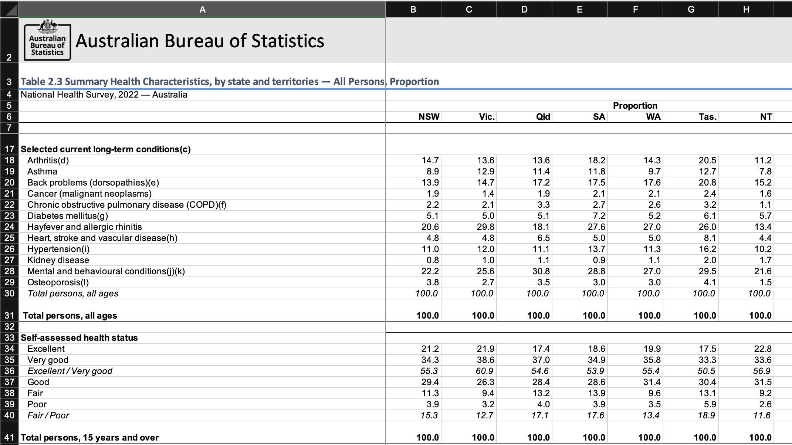

# Filter to these rows
df1Clean <- df1Raw |>
filter(X %in% healthStatus)Getting started
The End Goal
Let’s start with the goal in mind! Here it is—a 100% stacked bar chart showing the breakdown of self-rated health status for 8 states and territories.

The simple chart format is enhanced using techniques covered in this workshop.
- Ordering The states and territories on the y-axis are ordered from top to bottom by the proportion of respondents describing their health status as Very good or Excellent.
- Colour The chart uses a familiar traffic-light colour scheme, to distinguish between Poor and Excellent self-assessed health.
- Text hierarchy The main chart title is an informative title highlighting the key message. A descriptive subtitle explains in more detail what is plotted in the chart while the data source is provided in the footnote.
- Annotation Text annotations indicate the percentage response for each category. Note that the colour for these labels has been carefully chosen to contrast against the background colour and the labels have been suppressed for the ‘Poor’ category, to avoid overflow.
- Story telling As well as having an informative chart title, the keywords Excellent and Very Good are emphasised with bold font and appropriate colours to help connect the title to the data and reinforce the message.
The data
The data for this plot come from the National Health Survey (NHS) 2022, a face-to-face interview survey conducted by the Australian Bureau of Statistics (ABS) and designed to collect information on health behaviours, conditions prevalence, and risk factors in Australia. You can read more about the survey on the ABS website here.
These data are openly available for download in .xlsx format from the ABS website and a copy is also included in the workshop repo in the file national-health-survey-2022-table-2.xlsx.
Aims
In this exercise you will use dplyr and other tools to read-in and clean the self-assessed health data from the National Health Survey. The raw data is the .xlsx file downloaded from the ABS data. The final output will be a tidy data file in .csv and .Rda format. Essentially, we will use code to go…
From this messy excel sheet
To this tidy dataframe!

Tidy data
Remember, in a tidy dataset:
- Each variable is a column; each column is a variable.
- Each observation is a row; each row is an observation.
- Each value is a cell; each cell is a single value.
If you examine the output above you will see this is true for the clean data: there are three columns, and each column is a variable: status, state, and percent. Each row is an observation, telling us the per cent for every state and status combination. Finally, each cell is a single value—there are no merged cells.
None of these rules of tidy datasets hold for the original .xlsx file!
How to complete this exercise
This first exercise is fully guided—just follow the data cleaning steps and copy-paste the code snippets into your own code file to build up a working data cleaning pipeline.
Note that some steps are incremental, for example Step 6 provides code to filter data.
In the next step, Step 7, you are given code to select certain variables.
# Append this line to the previous code using |>
select(c(X, ends_with(".1"), -'Australia.1'))But note the comment:
Append this line to the previous code using |>
This means that you should append the code in Step 7 to the previous code in Step 6 using the |> operator to connect the two. So after you complete Step 7 the code in your file will look like this:
# Filter to these rows
df1Clean <- df1Raw |>
filter(X %in% healthStatus) |>
select(c(X, ends_with(".1"), -'Australia.1'))